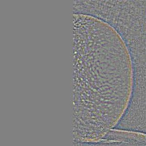

Convolutions, Filters, and Blending!
Project Overview
In this project I'll be diving into the fascinating world of convolutions and how far we can take them to create some cool results!
Part 1: Fun with Filters
1.1 Convolutions from Scratch
Lets start with an initial black and white image.
Here's one of me! 512 pixels by 512 pixels
Now say for example, I really want to "smooth" out my image. The idea behind a convolution is that for each pixel, I'll center a grid-box around it. Each grid in my box will take on some value. Then I will see what pixel in the image overlaps on my grid, and multiply that pixel by the value in my grid. I will repeat that same process until I have all the overlapped values. I will finally sum each of those values, and put it back into the center of my grid-box. Repeating this process for every pixel will get us a convolved image.
Here is some very naive code relying on four for-loops:
def convolve(img, kernel):
height_of_img, width_of_img = img.shape
new_image = np.zeros((height_of_img, width_of_img))
height_of_kernel, width_of_kernel = kernel.shape
#if we can flip kernel, lets do it
if height_of_kernel > 1:
kernel = np.flip(kernel, axis = 0)
if width_of_kernel > 1:
kernel = np.flip(kernel, axis = 1)
pad_x, pad_y = height_of_kernel//2, width_of_kernel//2
#lets go through every pixel in the image
for i in range(height_of_img):
for j in range(width_of_img):
running_sum = 0
#we're centered around the pixel in our image. Now lets apply our filter
for row in range(-pad_x, pad_x + 1):
for col in range(-pad_y, pad_y + 1):
#lets check if in bounds. If not, since 0 padding, we can assign the value to 0
if (0 <= row + i < height_of_img and 0 <= col + j < width_of_img): #if we're in-bounds
running_sum += kernel[row + pad_x, col + pad_y] * img[row+i, col+j]
new_image[i,j] = running_sum #update the place in the image
return new_image
In a convolution, we make sure we flip the kernel horizontally and vertically first. This allows for some nice properties. Running a 9x9 kernel convolution over this 512x512 image takes around 5 seconds.
Because this four for-loop is a little slow, we can try to do this in two for-loops, using numpys dotproduct function to quickly multiply and get the value between the kernel and image:
def two_convolve(img, kernel):
height_of_kernel, width_of_kernel = kernel.shape
if height_of_kernel > 1:
kernel = np.flip(kernel, axis = 0)
if width_of_kernel > 1:
kernel = np.flip(kernel, axis = 1)
pad_h, pad_w = height_of_kernel//2, width_of_kernel//2
height_of_img, width_of_img = img.shape
new_image = np.zeros((height_of_img, width_of_img))
padded_img = np.pad(img, ((pad_h, pad_h), (pad_w, pad_w)), mode='constant', constant_values=0)
for i in range(height_of_img):
for j in range(width_of_img):
new_image[i,j] = np.sum(padded_img[i:i+height_of_kernel, j: j+ width_of_kernel] * kernel)
return new_image
Running this takes 0.56 seconds. Notice in this that there's somethning called "padded_img" that wasn't in the previous implementation. This pads our image with values of zeros so we can place our kernel on the edges of the image. Values of the kernel that go over the edge will multiply with 0. In the previous implementation, I simply skipped out on summing those overhang values.
Here is the resulting image from either implementation:
9x9 kernel of all ones (this means we're grabbing the average of the pixels in a 9x9 grid).
Notice the slight black border around the image. This is because when we are on the edges, the 0-value border is pushing our average down.
Lucky for us, numpy has a built in convolution function:
signal.convolve2d(magnus_image_resized, filter, mode='same', boundary='fill', fillvalue=0)
This takes .03 seconds!
1.2 Finite Difference Operator
The fun thing above convolutions is that we can apply interesting masks to reveal underlying information about the image. Take these kernels for example:

The one on the left highlights pixel intensity changes horizontally, while the one on the right reveals pixel intensity changes vertically. To see why this is, imagine tracing this over pixels of an image. If the pixels are on either side are both positive or negative, they will cancel out. However, if one side is positive while the other side is negative, they will amplify the output. Here are the examples:
Using the dx operator
Using the dy operator
Notice how the dx operator makes it obvious where borders are if our eyes are tracing left to right. Its even more stark in the dy operator where the borders are if our eyes are tracing top to bottom. We can actually think of this as the "partial" of our image in a direction, since we're looking at the change in value across a direction.
With this in mind lets turn ourselves over to this cameraman image:

Applying the dx and dy operators results in this:

Because we have the partial in both x and y, we can calculate the gradient magnitude which is the square root of sum of partials squared:

We can now apply a threshold to bring out our edges
I picked a threshold of 57 to reduce noise but also bring out the edges
1.3 Derivative of Gaussian Filter
Although this works fairly well, our final binary edge image is still quite noisy. We can try to reduce the noise first by applying a gaussian filter. Note white is equal to a value of 1 while black is equal to a value of 0. Here is the cameraman after convolving:
7x7 gaussian kernel, sigma = 1
original image
convolved image
Applying the same steps as before we get something like this:
Threshold set to 57
The nice thing about convolutions is that they are communative. For example, right now we are first convolving our image with the gaussian, then convolving with our dx dy operators, and then calculating the magnitude. What we can do instead is convolve our gaussian with our dx and dy operators, then convolve with our image, and then calculate the magnitude. Here is what the new convolved gaussian kernel looks like:
derivative of gaussian in x
derivative of gaussian in y
Applying these new kernels to our image will now result in smoothed out dx, dy images like done above. Calculating the magnitude results in the same image as before. Here are the three final results
Simple binary edge detector
gaussian convolution with image, then dx dy convolution, then magnitude.
dx dy convolution with gaussian, then image convolution, then magnitude
Part 2: Fun with Frequencies
2.1 Image "Sharpening"
When editing an image you might see something that can bring out the "sharpness" of the image. What this means is that we're simply adding more high frequencies to our original base image. In order to get those high frequencies, we can subtract a low frequency image (ex. a smoothed out version of the image) from the original. Here is the image and its high frequency component:

starting image
image - (image convolved with 7x7 gaussian kernel, alpha = 1)
If we now decided to scale our high frequency image by a constant, alpha, and add it back to our original we get our "sharpened image". However, we can actually do this in a much cleaner way. Because of the communative properties of convolutions, we can create a mask and perform one convolution. Here is the code:
def sharpen(image, kernel, alpha):
identity=signal.unit_impulse(kernel.shape)
new_mask = (1+alpha)*identity - (alpha * kernel)
convolved = signal.convolve2d(image, new_mask, mode='same', boundary = 'fill', fillvalue=0)
clipped = np.clip(convolved, 0, 255)
return clipped
\[\alpha = 1\]
\[\alpha = 2\]
\[\alpha = 5\]
The following is an example if we decide to blur our taj mahal image, then apply sharpening
Gaussian 7x7 \[\sigma = 1\]
High frequency component
\[\alpha = 1\]
\[\alpha = 2\]
\[\alpha = 5\]
Other example
original

\[\alpha = 2\]
2.2 Hybrid Images
With high and low frequencies in our toolkit, we can actually create some really fun things. For example, our eyes are much more receptive to high frequencies up close and low frequencies farther away. This means we can create "hybrid images" that look like one thing up close and another far away! Here are our two starting images:

Results
close
far
Another one!
Here's one of the Rock and John Cena
The Rock
John Cena
Aligned
Aligned
The spectrum analysis:
The Rock aligned
John Cena aligned
The Rock, low frequency, \[\sigma=5\]
John Cena, high frequency, \[\sigma=7\]
And the final results
Hybrid Spectrum
Rock, the John
The Journey of the Orapple (and blending)
This story begins with an apple and orange


2.3 Gaussian and Laplacian Stacks
The idea behind this section that we'll create high frequency images for the apple and orange, create low frequency images of our mask, and at each level, multiply the mask by the high frequency apple and orange respectively. At the end, we'll collapse these images into one.
Here are the resulting stacks
Gaussian \[ \sigma = 2 \]
Laplacian \[\sigma = 2\]
Gaussian \[\sigma = 2\]

Laplacian \[\sigma = 2\]
Gaussian \[\sigma = 2\]


2.4 Multiresolution Blending
Here is the combination of the laplacian multiplied by the mask:
Level 0
Level 0
Level 0
Level 2
Level 2
Level 2
Level 4
Level 4
Level 4
Level 5
Level 5
Level 5
After summing down each of the levels, we get something like this
final image!
Personal Creations
image 1
image 2
mask
combined
image 1
image 2
mask
combined